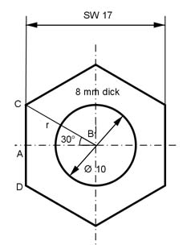

Aufgabe 149 Aus einem 60 mm langen Sechskantstahl mit einer Schlüsselweite von 17 mm soll eine Schraube M10 mit einem 8 mm hohen Kopf hergestellt werden. Berechnen Sie den Abfall A in cm³.  AB = 17 mm/2 = 8,5 mm Im Dreieck ABC gilt: 8,5 mm cos 30° = -------- |*r r r * cos 30° = 8,5 mm | :cos 30° 8,5 mm 8,5 mm r = ---------- = -------- = 9,8 mm cos 30° 0,866 Volumen V6Eck des ursprünglichen Sechseckprismas: DC = r DC * AB 9,8 mm * 8,5 mm Volumen V6Eck = 6 * ---------- * 60 mm = 6 * ------------------ * 60 mm 2 2 Volumen V6Eck = 14 994 mm³ = 15 cm³ Volumen Kopf des fertigen Schraubenkopfes: DC * AB 9,8 mm * 8,5 mm VKopf = 6 * --------- * 8 mm = 6 * ------------------ * 8 mm 2 2 VKopf = 1 999,2 mm³ = 2 cm³ Volumen des Zylinders: rZylinder = 10 mm/2 = 5 mm Länge l des Zylinders = 60 mm - 8 mm = 52 mm VZylinder = π * rZylinder² * l = π * 5² mm² * 52 mm = 4 082 mm³ = 4,1 cm³ A = V6Eck - VKopf - VZylinder = 15 cm² - 2 cm³ - 4,1 cm³ = 8,9 cm³